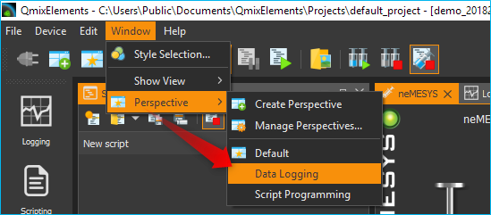
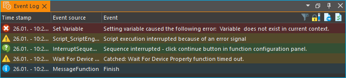
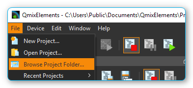

2. Einführung CETONI Elements Software
2.1. Erster Start
Beim ersten Start der Software wird die Auslieferungskonfiguration ohne Plugins geladen. D.h. die Software lädt nur ihr Kern-System aber keine gerätespezifischen Plugins. Dies erkennen Sie daran, dass Ihnen von der Software der Startbildschirm angezeigt wird (Abbildung unten).

Um mit der Software ihre Geräte ansteuern zu können, müssen Sie eine Gerätekonfiguration installieren und laden. Eine Gerätekonfiguration ist eine Sammlung von Konfigurationsdateien, welche die Konfiguration aller Geräte und Module beschreiben, die zusammen ein komplexes System oder Gerät bilden. Im Startbildschirm sehen Sie alle Möglichkeiten, eine entsprechende Gerätekonfiguration zu laden:
Wichtig
Die Auslieferungskonfiguration mit dem Startbildschirm wird auch nach einem Softwareabsturz oder nach einem Update der Software geladen und angezeigt.
Wenn Sie die Anwendung im Demonstrationsmodus starten möchten, z.B. bei Präsentationen, zum ausprobieren und testen oder wenn Sie im Moment keine Geräte haben, dann klicken Sie die Schaltfläche Start Demo an.
2.2. Lizenzschlüssel
2.2.1. Lizenzen aktivieren
Direkt nach der Erstinstallation der Software, verfügen Sie über eine aktive Demo-Lizenz. Um sich Ihre installierten Lizenzen anzeigen zu lassen, wählen Sie im Hauptmenü den Punkt .

Mit der Demo-Lizenz können Sie Gerätekonfigurationen mit simulierten Geräten erstellen und alle Funktionen der Software testen.

Um die Software zur Steuerung Ihrer Geräte verwenden zu können, müssen Sie den Lizenzcode den Sie erhalten haben in der Software registrieren. Wählen Sie dafür im Hauptmenü den Punkt .

Geben Sie in dem Dialog Ihren Lizenzcode ein und klicken Sie anschließend auf die Schaltfläche Activate. Wenn Sie den Lizenzschlüssel korrekt eingegeben haben, wird Ihnen die Aktivierung der Lizenz bestätigt und nach dem Neustart der Software können Sie mit der aktivierten Lizenz arbeiten:

Wenn Sie Ihre Lizenz upgraden oder zusätzliche Lizenzen für weitere Add-ons aktivieren möchten, können Sie genau wie oben beschrieben vorgehen.
2.2.2. Übersicht der aktivierten Lizenzen
Über die Menüpunkt Information im Hauptmenü der Anwendung, können Sie sich eine Übersicht der aktuellen Lizenzen anzeigen lassen:

2.2.3. Lizenzen entfernen
Wenn Sie alle Lizenzen entfernen möchten, wählen Sie im Hauptmenü den Menüpunkt Data. Es lassen sich keine einzelnen Lizenzen entfernen sondern nur alle Lizenzen gemeinsam. Nach dem Entfernen der Lizenzen arbeiten Sie wieder mit einer Demo Lizenz.
2.3. Gerätekonfiguration
Um mit der Software ihre Geräte ansteuern zu können, müssen Sie eine Gerätekonfiguration installieren und laden. Eine Gerätekonfiguration ist eine Sammlung von Konfigurationsdateien, welche die Konfiguration aller Geräte und Module beschreiben, die zusammen ein komplexes System oder Gerät bilden. Im Startbildschirm sehen Sie alle Möglichkeiten, eine entsprechende Gerätekonfiguration zu laden:
2.3.1. Gerätekonfiguration erstellen

Über die Schaltfläche Create Configuration können Sie neue Gerätekonfigurationen erstellen. Um einzelne Geräte oder komplette Systeme bestehend aus mehreren Einzelgeräten in CETONI Elements zu benutzen, müssen Sie eine Gerätekonfiguration erstellen. Hierfür verwenden Sie den Gerätekonfigurator, welcher in CETONI Elements integriert ist.
2.3.2. Gerätekonfiguration öffnen
Mit dieser Schaltfläche können Sie eine vorhandene Gerätekonfiguration laden, die zuvor auf Ihrem System installiert wurde.
2.3.3. Gerätekonfiguration importieren

Für die meisten Geräte und Module können Sie Gerätekonfigurationen mit dem Gerätekonfigurator selbst erstellen. Wenn Sie Geräte haben, die vom Gerätekonfigurator noch nicht unterstützt werden oder wenn Sie Geräte verwenden, die von CETONI vorkonfiguriert werden müssen finden Sie die Gerätekonfiguration auf dem Installationsdatenträger (CD oder USB-Stick) den Sie zusammen mit Ihrem Gerät erhalten haben.
Um eine vorhandene Gerätekonfiguration zu importieren, führen Sie die folgenden Schritte durch:
Tipp
Wenn Sie eine Konfiguration mit dem Gerätekonfigurator erstellen, wird diese automatisch installiert und Sie brauchen die folgenden Schritte nicht durchzuführen.
Wählen Sie im Hauptmenü den Menüpunkt .

Wählen Sie nun, ob Sie einen Ordner mit einer Gerätekonfiguration importieren möchten (Import Folder) oder eine komprimierte Konfigurationsdatei (Import .qcf File). Auf der Installations-CD, die Sie mit ihrem Gerät erhalten haben, sind die Gerätekonfigurationen in Ordnern abgelegt. Wählen Sie deshalb den Punkt Import Folder.

In dem Verzeichnisdialog, der nun angezeigt wird, wählen Sie das Verzeichnis
DeviceConfigurationauf der Installations-CD oder ein anderes Verzeichnis, dass eine gültige Gerätekonfiguration enthält.
Geben Sie nun noch einen kurzen eindeutigen Namen für die Konfiguration ein, unter dem diese auf ihrem Rechner gespeichert werden soll.

Bestätigen Sie den Neustart der Anwendung.

Nach diesen Schritten sollte die Software nun mit der gewählten Konfiguration geladen werden.
Wichtig
Beim Import werden Gerätekonfigurationen stets in das aktuelle Projekt importiert.
2.3.4. Gerätekonfiguration exportieren
Sie können Gerätekonfigurationen auch exportieren, z.B. wenn Sie eine Konfiguration an Mitarbeiter weitergeben möchten oder im Support-Fall, wenn Sie eine Gerätekonfiguration an CETONI senden möchten. Um eine Gerätekonfiguration zu exportieren, wählen Sie im Hauptmenü den Punkt .

Gerätekonfigurationen werden als komprimierte *.qcf Dateien exportiert.
2.4. Grundlagen CETONI Elements
2.4.1. Einführung
Die CETONI Elements Software ist eine Plugin-basierte, modulare Softwarelösung für die Steuerung verschiedenster Geräte im Bereich der Laborautomatisierung. Die Software besteht aus einem Kern, der die grundlegenden Funktionen und Dienste, wie z.B. das Anwendungsfenster, das Ereignisprotokoll oder die Werkzeugleiste, zur Verfügung stellt.
Dieses Grundsystem wird durch geräte- bzw. applikationsspezifische Softwaremodule, die Plugins, erweitert. Dadurch wird es möglich, je nach Gerätekonfiguration, eine passende Softwarelösung zur Verfügung zu stellen und das in einer einheitlichen Oberfläche.
2.4.2. Bedienungsanleitung anzeigen
Die Bedienungsanleitung der Software können Sie sich über den Menüpunkt im Hauptmenü der Anwendung anzeigen lassen.

Wichtig
Zur Anzeige der Bedienungsanleitung muss eine PDF-Betrachtungssoftware installiert sein.
2.4.3. Softwareversion anzeigen
Unter Umständen, z.B. im Servicefall, kann es notwendig sein, die Version der installierten Software zu ermitteln. Wählen Sie hierfür im Hauptmenü den Punkt . Es wird nun ein Fenster eingeblendet (siehe Abbildung unten), in dem die Versionsnummer der Software angezeigt wird.

2.5. Übersicht CETONI Elements Hauptfenster
Das Anwendungsfenster der CETONI Elements Software besteht im Wesentlichen aus den folgenden Komponenten:

Titelleiste
Hauptmenü
Werkzeugleisten (frei positionierbar, kann ausgeblendet werden)
Seitenleiste der Arbeitsbereiche (frei positionierbar, kann ausgeblendet werden)
Die einzelnen Views (Ansichten), die frei in der Oberfläche verschoben werden können
Statuszeile
2.6. Titelleiste
In der Titelleiste wird Ihnen der Name der Anwendung, der aktuelle Projektpfad und der Name der aktuell geladenen Gerätekonfiguration angezeigt. Das folgende Beispiel verdeutlicht dies etwas genauer. Enthält die Titelleiste z.B. den folgenden Text:
CETONI Elements – C:\Users\Public\Documents\CETONI Elements\Projects\default_project [demo (shared)]
dann können Sie daraus die folgenden Informationen entnehmen:
Name der Anwendung: CETONI Elements
aktueller Projektpfad:
C:\Users\Public\Documents\CETONI Elements\Projects\default_projectGerätekonfiguration: demo (shared)
2.7. Views (Ansichten)
2.7.1. Einführung
Die Views sind Fenster, die die Anzeige- und Steuerlemente für eine ganz bestimmte Aufgabe oder ein bestimmtes Gerät beinhalten. So gibt es z.B. Views für den grafischen Logger, die Anzeige von I/O Kanälen oder für den Script Editor.
Alle Views können innerhalb des Hauptfensters via Drag & Drop frei verschoben werden. Alle Views können ein- und ausgeblendet werden und die Views können auch via Drag & Drop aus dem Hauptfenster herausgelöst werden, um sie auf einen anderen Bildschirm zu verschieben. Damit können Sie die Oberfläche der CETONI Elements Software optimal an Ihre Anforderungen und Ihre Anwendung anpassen und sich so eine individuelle grafische Oberfläche konfigurieren.
2.7.2. Views einblenden
Wenn Sie die Software starten, kann es sein, dass nicht alle Views eingeblendet sind. Um einen View einzublenden, wählen Sie im Hauptmenü den Punkt . Sie sehen dann ein Menü mit allen Views, die in der Anwendung zur Verfügung stehen. Klicken Sie einfach den entsprechenden Menüpunkt an, um den View einzublenden (siehe Abbildung unten).

Bei verschiedenen Geräten kann es sein, dass für jedes Gerät ein eigener View existiert (z.B. für Kameras). In diesem Fall sind die Views im View-Menü in einer Gruppe zusammengefasst und können einzeln eingeblendet werden.

Alternativ können Sie auch einige Views über die Seitenleiste einblenden, ohne dafür erst das Hauptmenü öffnen zu müssen.
2.7.3. Views verschieben
Um einen View zu verschieben, müssen Sie ihn zuerst aus seiner bisherigen Position lösen. Dafür gibt es verschiedene Möglichkeiten. Die erste Möglichkeit ist Drag & Drop. Klicken Sie dafür mit der linken Maustaste in den Reiter des Views ❶ und ziehen Sie den View einfach mit gedrückter Maustaste aus seiner Position heraus ❷. Solange Sie die Maustaste nicht loslassen, können Sie den View frei verschieben (siehe Abbildung unten).

Alternativ können Sie den View auch durch einen Doppelklick auf den Reiter aus seiner Position herauslösen. Die dritte Möglichkeit ist das Kontextmenü des Views. Klicken Sie dafür mit der rechten Maustaste in den Karteireiter und wählen Sie aus dem Kontextmenü den Punkt Detach.

Wenn Sie den View aus seiner Position herausgelöst haben, wird der View in einem eigenen Fenster angezeigt. Dieses Fenster können Sie nun wie jedes andere Fenster des Betriebssystems vergrößern, verkleinern, maximieren oder auf einen anderen Bildschirm verschieben.
2.7.4. Views andocken
Sie können Views, oder Gruppen von Views, die ein eigenes Fenster haben, via Drag & Drop in das Hauptfenster oder ein beliebige anderes View-Fenster andocken. Dafür ziehen Sie das Fenster des Views einfach über das Zielfenster, in das der View / die View-Gruppe angedockt werden soll. In dem Zielfenster werden Ihnen dann Symbole angezeigt – die Drop-Targets. Diese Zielmarkierungen kennzeichnen die Bereiche, in denen das Fenster eingefügt werden kann. Wenn Ihr Zielfenster nur einen View enthält, sehen Sie nur 5 Drop-Targets.

Wenn Sie den Mauszeiger über ein Drop-Target bewegen, während Sie ein Fenster verschieben, dann wird Ihnen über einen farbigen Rahmen (Drop Preview) angezeigt, an welche Position (Dock Area) der View eingefügt werden würde.

Wenn Sie nun die Maustaste über der Zielmarkierung loslassen, wird das das Fenster an der durch das Drop-Preview gekennzeichneten Position eingefügt.

Wenn Sie als Drop-Target das Symbol in der Mitte des Fensters wählen, dann wird der neue View als ein zusätzlicher Karteireiter auf der Position des dort vorhandenen Views eingefügt.

Wenn Sie das Ihr View über ein Fenster ziehen, welches bereits mehrere Views enthält, dann werden Ihnen zusätzliche Drop-Target Markierungen angezeigt. D.h., Sie haben dann zusätzliche Möglichkeiten für das Andocken des View-Fensters. In der Abbildung unten können Sie dies sehen. Es gibt die äußeren Drop-Targets ❶, die Sie bereits aus der Beschreibung oben kennen. Zusätzlich gibt es noch fünf weitere Drop-Targets, die in Form eines Kreuzes angezeigt werden ❷.

Bewegen Sie das Fenster bei gedrückter Maustaste über die einzelnen Markierungen das Drop-Preview zu sehen und um ein Gefühl dafür zu bekommen, welche Möglichkeiten zum Andocken eines Fensters existieren.
Wenn Sie ein View als zusätzlichen Karteireiter andocken möchten, können Sie den Mauspfeil entweder über das mittlere Drop-Target Symbol ❶ bewegen (siehe Abbildung unten) oder über die Titelleiste eines bereits angedockten Views ❷.

2.7.5. View-Gruppen verschieben
Es können nicht nur einzelne Views verschoben werden sondern auch komplette View-Gruppen in denen mehrere Views als Karteireiter enthalten sind. Zum Verschieben einer kompletten View-Gruppe klicken Sie nicht auf den Karteireiter des Views sondern in die Titelleiste der Gruppe (siehe Abbildung unten). Sie können nun die komplette Gruppe via Drag & Drop aus der aktuellen Position herauslösen und verschieben.

Alternativ können Sie eine View-Gruppe auch herauslösen durch einen Doppelklick in die Titelleiste ❶ der Gruppe, über den Menüpunkt Detach Area ❷ im Kontextmenü oder durch Anklicken der Detach Schaltfläche in der Titelleiste ❸.

Eine View-Gruppe oder ein Fester mit mehreren Views können Sie genau so andocken wie ein Fenster mit nur einem View.
2.7.6. Views und View-Gruppen schließen
Einen einzelnen View können Sie entweder über die Schließen-Schaltfläche ❶ im aktiven Karteireiter schließen oder über den Menüpunkt Close ❷ im Kontextmenü eines Karteireiters.

Eine View-Gruppe kann mit der Schließen-Schaltfläche ❶ in der Titelleiste der Gruppe oder mit dem Menüpunkt Close Area ❷ im Kontextmenü der View-Gruppe geschlossen werden.

2.7.7. Nützliches bei der Arbeit mit Views
Wenn Sie View-Gruppen mit sehr vielen Views haben, kann es sein, dass durch die Anzahl der Karteireiter und durch die dann verkürzt dargestellten Beschriftungen eine Navigation zwischen den einzelnen Views der Gruppe schwierig ist. In diesem Fall können Sie über die entsprechende Schaltfläche in der Titelleiste der View-Gruppe ein Menü mit allen Views der Gruppe aufrufen und darüber den entsprechenden View wählen.

Wenn Sie in einer View-Gruppe schnell „aufräumen“ möchten, können Sie über das Kontextmenü alle Views außer den gerade aktiven View schließen. Wählen Sie dafür im Kontextmenü des aktiven Karteireiters den Punkt Close Others.

Wenn Sie in einem Fenster, z.B. im Hauptfenster der Anwendung, schnell „aufräumen“ möchten, können Sie über das Kontextmenü einer View-Gruppe alle anderen Gruppen schließen. Wählen Sie dafür aus dem Kontextmenü der View-Gruppe den Menüpunkt Close Other Areas.

2.8. Perspektiven
2.8.1. Einführung in die Arbeit mit Perspektiven
Unterschiedliche Aufgaben, unterschiedliche Geräte oder auch unterschiedliche Anwender erfordern eine unterschiedliche Anordnung von Views. Über das Verschieben der einzelnen Views können Sie die Oberfläche optimal an Ihre Anforderungen, an Ihre Art zu arbeiten oder an Ihre PC-Hardware anpassen.
Wenn Sie für eine bestimmte Aufgabe die perfekte Anordnung der Views gefunden haben, können Sie diese Anordnung unter einem eignen Namen speichern. Diese gespeicherte Anordnung wird in der Software als Perspektive (Perspective) bezeichnet. Haben Sie mehrere Perspektiven angelegt, können Sie durch einen einzigen Mausklick die komplette Oberfläche der Anwendung Umbauen und an eine neue Aufgabe oder Anforderung anpassen.
Sie können eine Perspektive über die entsprechende Schaltfläche in der Werkzeugleiste aktivieren.

Wenn Sie auf die Schaltfläche klicken, wird die Standard Perspektive (Default) geladen. Wenn Sie auf den Pfeil neben der Schaltfläche klicken ❶ (siehe Abbildung unten), öffnen Sie das Menü zur Auswahl einer vorher angelegten Perspektive ❷.

Wenn Sie eine Perspektive anklicken, werden die Views in der Oberfläche so angeordnet wie zum Zeitpunkt der Erstellung dieser Perspektive. Alternativ können Sie auf die Perspektiven auf über das Hauptmenü zugreifen. Wählen Sie dafür den Menüpunkt .
Tipp
Wenn Sie bei der Anordnung der Views einmal die Übersicht verloren haben oder mit der Anordnung neu beginnen möchten, rufen Sie über die Perspektive Schaltfläche in der Werkzeugleiste einfach die Standard Perspektive (Default) auf.
2.8.2. Perspektiven anlegen

Um eine Perspektive anzulegen, klicken Sie in der Werkzeugleiste auf die Schaltfläche Create Perspective. Geben Sie dann in dem Eingabedialog einen eindeutigen Namen für diese Perspektive ein und klicken Sie OK.

Die neue Perspektive ist nun im Perspektiv-Menü verfügbar.
2.8.3. Perspektiven löschen
Um Perspektiven zu löschen, wählen Sie im Perspektivemenü den Menüpunkt Manage Perspectives.

Es wird nun ein Dialog mit einer Liste aller Perspektiven angezeigt. In der Liste (❶) können Sie nun ähnlich wie im Dateiexplorer einzelne oder mehrere Perspektiven auswählen. Mit Hilf der Shift-Taste können Sie mehrere zusammenhängende Einträge auswählen. Mit Hilfe der Ctrl-Taste können Sie mehrere Einträge hintereinander anklicken und damit auswählen.

Wenn Sie dann die Schaltfläche Remove (❷) klicken, werden alle ausgewählten Perspektiven gelöscht.
2.9. Seitenleiste
Die Seitenleiste ermöglicht Ihnen das schnelle Einblenden verschiedener Views. Einige Schaltflächen blenden einen bestimmten View direkt ein. Andere Schaltflächen ermöglichen das Einblenden mehrerer Views und zeigen dafür ein Menü an (siehe Abbildung unten).

Tipp
Die Seitenleiste, und auch alle Werkzeugleisten, können frei in den Randbereichen des Hauptfensters positioniert und angeordnet werden. Wenn Sie mit der rechten Maustaste in eine Werkzeugleiste klicken, sehen Sie ein Menü zum Ein- und Ausblenden der Werkzeugleisten.
2.10. Ereignisprotokoll
2.10.1. Übersicht zum Ereignisprotokoll
Im Ereignisprotokoll Event Log werden wichtige Ereignisse angezeigt. Dazu gehören Hinweise, Warnmeldungen und Fehlermeldungen. Der View mit dem Ereignisprotokoll wird automatisch eingeblendet, wenn ein Ereignis in das Protokoll geschrieben wird.
Möchten Sie das Ereignisprotokoll manuell einblenden, wählen Sie im Hauptmenü der Anwendung den Punkt .

Das Ereignisprotokoll listet die einzelnen Ereignisse in zeitlicher Abfolge auf. Das neueste Ereignis ist dabei immer das Ereignis, welches als letztes Element am Ende des Protokolls eingefügt wurde. Dies wir auch an den Zeitstempeln in der ersten Spalte deutlich.

Beim Verbinden zur Gerätehardware, kann es vorkommen, dass im Ereignisprotokoll Gerätefehler empfangen und angezeigt werden (siehe oben). Diese Fehler können Sie ignorieren und löschen, wenn im Ereignisprotokoll eine aktuellere Nachricht von der gleichen Ereignisquelle (vom gleichen Gerät) vorhanden ist, in der die Fehlerfreiheit des Gerätes gemeldet wird.
In dem Beispiel (Abbildung oben) melden alle 3 Achsen der Rotaxys Probenhandlers einen Fehler (❶). Die aktuellsten letzten drei Meldungen (❷) zeigen aber, das kein Fehler mehr vorhanden ist und das Gerät fehlerfrei arbeitet.
2.10.2. Ereigniskategorien
Im Event-Log werden die unterschiedlichen Ereigniskategorien farblich und durch entsprechende Icons gekennzeichnet.
 blau - Information
blau - InformationAllgemeine Informationen, Statusmeldungen oder unkritische Meldungen von Scriptfunktionen mit informativem Character. Diese Ereignisse geben z.B. an, dass ein bestimmter Vorgang erfolgreich abgeschlossen wurde oder dass ein bestimmter Zustand erreicht wurde.
 gelb - Warnung
gelb - WarnungDiese Ereignisse geben an, dass ein bestimmtes Ereignis eingetreten ist, das möglicherweise Auswirkungen auf das System oder die Anwendung hat. Sie weisen auf ein mögliches Problem hin, aber die Anwendung / das Script können weiterhin funktionieren.
 rot - Fehler
rot - FehlerDiese Ereignisse geben an, dass Fehler aufgetreten sind, die dazu führen können, dass das Script, die Anwendung oder bestimmte Geräte nicht mehr korrekt funktionieren.
 grün - Anwenderinteraktion
grün - AnwenderinteraktionDiese Ereignisse informieren den Anwender darüber, dass Nutzerinteraktionen, wie z.B. das Drücken eine Taste oder die Bestätigung einer Meldung, erforderlich sind.
2.10.3. Funktionen des Ereignisprotokolls
In der Kopfzeile ❶ des Event Log oder im Kontextmenü ❷ stehen Ihnen verschiedene Funktionen zur Verfügung:


Mit der Filter Funktion können Sie das Ereignisprotokoll nach einer bestimmten Ereigniskategorie filtern. Dadurch wird es leichter, bei vielen Einträgen im Protokoll den Überblick zu behalten oder bestimmte Ereignisse zu finden.


Wenn neue Ereignisse in das Protokoll geschrieben werden, wird automatisch zum letzten eingefügten Element gescrollt, so dass immer das aktuellste Element sichtbar ist. Soll das Ereignisprotokoll nach einem bestimmten Eintrag durchsucht werden, oder wenn Sie die zeitliche Abfolge von Ereignissen analysieren möchten, kann dieses automatische Scrolling unerwünscht sein. Aktivieren Sie in diesem Fall die Schaltfläche Scroll Lock um das automatische Scrolling zu deaktivieren.

Durch Klicken der Schaltfläche Export To File können Sie den Inhalt des Ereignisprotokolls in eine Textdatei exportieren. Nachdem Sie einen Dateinamen vergeben haben, wird die Datei gespeichert und Sie können Sie in einem beliebigen Texteditor öffnen.


Sie können das Ereignisprotokoll durch drücken der Schaltfläche Clear Event Log in der rechten oberen Bildschirmecke (siehe Abbildung) löschen.

Wenn Sie mit der rechten Maustaste auf einen Log-Eintrag klicken, der von einer Script-Funktion verursacht wurde, dann sehen Sie im Kontextmenü zusätzlich den Menüeintragen . Wenn Sie diesen Menüpunkt auswählen, wird Ihnen im Script Editor die Funktion angezeigt und hervorgehoben, die das Log-Event verursacht hat. Ein Doppelklick mit der Maus auf den entsprechenden Log-Eintrag führt zum selben Ergebnis.
Tipp
Durch einen Doppelklick auf einen Log-Eintrag wird Ihnen im Script Editor die Funktion angezeigt, die den Log-Eintrag verursacht hat.
2.11. Statuszeile
In der Statuszeile werden Statusinformationen, wie z.B. der Verbindungsstatus zum Gerät, angezeigt.
2.12. Verbindung zum Gerät herstellen
In der Werkzeugleiste finden Sie die Schaltfläche Connect to device mit einem Steckersymbol (siehe Abbildung unten). Drücken Sie diese Schaltfläche, um eine Verbindung zum Gerät herzustellen.

Wichtig
Um eine Verbindung zum Gerät herzustellen, muss das Gerät über USB mit dem PC verbunden und die Spannungsversorgung für das Gerät aktiv sein.
2.13. Arbeiten mit Projekten
2.13.1. Einführung
Wenn Sie mit der CETONI Elements Software arbeiten, dann arbeiten Sie stets in einem bestimmten CETONI Elements Projekt. In einem Projekt werden alle projektspezifischen Daten, wie z.B. die aktuelle Gerätekonfiguration, anwenderspezifische Gerätenamen, Spritzen- und Schlauchkonfigurationen, Skalierungsfaktoren, Flussraten, SI-Einheiten und vieles mehr gespeichert. D.h., wenn Sie ein Projekt laden, werden alle anwenderspezifischen Einstellungen geladen. So können Sie einfach zwischen verschiedenen Projekten wechseln, oder Projekte mit anderen Mitarbeitern teilen.
Das aktuelle Projekt, in dem Sie arbeiten, wird Ihnen stets in der Titelleiste angezeigt. Wenn Sie im Hauptmenü den Menüpunkt wählen, wird das aktuelle Projekt im Dateiexplorer geöffnet.
Im Dateiexplorer sehen Sie alle projektspezifischen Daten des Projektes.
Jedes Projekt hat eine feste Struktur von Dateien und
Unterverzeichnissen. In der Datei projectsettings.ini werden alle
projektspezifischen Einstellungen gespeichert. Zusätzlich finden Sie im
Projektverzeichnis die folgenden Unterverzeichnisse:*
Configurations– in diesem Verzeichnis werden alle Gerätekonfigurationen gespeichert, die Sie importieren oder mit dem Gerätekonfigurator anlegen.Data– in dieses Verzeichnis können die Plugins Daten ablegen, die nicht in der Settings Datei gespeichert werden können.Log– dient zum Speichern von Log-Dateienwie z.B. von CSV-Dateien wie sie vom CSV-Logger erzeugt werden.Pictures– speichert alle Bilddateien, die im Projekt aufgenommen werden (z.B. durch Scriptfunktionen oder vom Kamera-Plugin).Scripts– alle Scriptdateien, die Sie in dem Projekt erstellen, sollten Sie in dieses Verzeichnis speichern.Videos– Videodateien, die vom Kamera-Plugin erzeugt werden, sollten in dieses Verzeichnis gespeichert werden.
2.13.2. Ein neues Projekt erstellen
Wählen Sie im Hauptmenü den Punkt um ein neues Projekt zu erstellen.
In dem Dialog, der Ihnen dann angezeigt wird, können Sie das neue Projekt konfigurieren. Vergeben Sie als erstes einen eindeutigen Projektnamen ❶ . Wählen Sie dann, ob Sie die Einstellungen des aktuellen Projektes in das neue Projekt kopieren möchten (Copy current project settings) oder ob Sie mit einem leeren Projekt starten wollen (Create empty project) ❷.
Wählen Sie dann den Ort aus, in dem das Projektverzeichnis erzeugt werden soll. Standardmäßig, wenn Use default location ❸ aktiv ist, wird das Projekt im Projektverzeichnis des CETONI Elements Datenordners erstellt. Wenn Sie den Speicherort selbst wählen möchten, z.B. um das Projekt auf einem externen Datenträger zu speichern, entfernen Sie das Häkchen ❸ und wählen Sie durch Anklicken der Browse-Schaltfläche ❹ einen Speicherort aus.
Schließen Sie die Erstellung des neuen Projektes durch Anklicken von OK ❺ ab.

Wichtig
Speichern Sie Projektdaten, wie z.B. Scripte, Bilder, Log-Dateien wenn möglich immer im Projektverzeichnis oder in den entsprechenden Unterverzeichnissen ab. Nur so ist sichergestellt, dass beim Projektexport alle wichtigen Daten exportiert oder gesichert werden.
2.13.3. Ein vorhandenes Projekt öffnen
Wählen Sie zum Öffnen eines vorhandenen Projektes im Hauptmenü den Menüpunkt .

In dem Dialog der Ihnen nun angezeigt wird, können Sie über die Auswahlbox ❶ ein Projekt aus dem Standard-Projektverzeichnis auswählen. Sie können dafür auch den Projektnamen in die Auswahlbox eintippen. Die Auswahlbox unterstützt Sie bei der Eingabe durch die Einblendung von entsprechenden Projekten. Wenn Ihr Projekt nicht im Standardverzeichnis gespeichert ist, klicken Sie auf die Browse-Schaltfläche ❷. Sie können dann mit einem Verzeichnisauswahldialog das gewünschte Projektverzeichnis (z.B. auf einem externen Datenträger) auswählen.

Öffnen Sie das neue Projekt dann durch Anklicken von OK ❸.
2.13.4. Das aktuelle Projekt exportieren
Wenn Sie Ihr Projekt archivieren möchten oder an einen anderen Anwender
weitergeben möchten, können Sie das schnell und einfach durch den Export
eines Projektes realisieren. Beim Projektexport werden alle Daten eines
Projektes, die sich im Projektverzeichnis befinden und die Sie zum
Export auswählen, in eine komprimierte Projektdatei (.qpr)
gespeichert.

Um ein Projekt zu exportieren, müssen Sie zuerst das Projekt in der Software öffnen. Wählen Sie nun aus dem Hauptmenü der Anwendung den Punkt .
In dem Export Dialog der Ihnen angezeigt wird, können Sie nun auswählen, welche Verzeichnisse des Projekts exportiert werden sollen ❶.

Klicken Sie die Schaltflächen Select All ❷ oder Select None ❸ an, um alle Elemente oder kein Element auszuwählen.
Wichtig
Der Export von Verzeichnissen mit großen Datenmengen, wie z.B. Pictures und Videos, führt zu großen Projektdateien und längeren Zeiten für den Export eines Projektes. Exportieren Sie solche Verzeichnisse nur, wenn es für die Weitergabe der Daten notwendig ist.
Während des Exports erhalten Sie durch das Ereignis-Protokoll (Event-Log) ❶, das Progress-Fenster ❷ und in der Statuszeile ❸ Informationen zum aktuellen Stand des Exports.

Sie können den Export jederzeit durch Anklicken der Cancel-Schaltfläche ❹ abbrechen.
2.13.5. Projekte importieren
Mit der Importfunktion können Sie Projektdateien (*.qpr) in die
Software importieren. Wählen Sie dafür im Hauptmenü den Menüpunkt
.

In dem Dateiauswahldialog,
der Ihnen nun angezeigt wird, wählen Sie die Projektdatei (*.qpr) aus,
die Sie importieren möchten. Danach wird Ihnen ein Dialog angezeigt, in
dem Sie den Namen eingeben, unter dem das importierte Projekt im
Projektverzeichnis gespeichert werden soll.

Wichtig
Vergeben Sie einen eindeutigen Projektnamen. Wenn Sie einen Namen verwenden für den bereits ein Projekt im Projektverzeichnis vorhanden ist, dann ist ein Import nicht möglich.
Wie beim Export so erhalten Sie auch beim Projektimport durch das Ereignis-Protokoll (Event-Log) ❶, das Progress-Fenster ❷ und in der Statuszeile ❸ Informationen zum aktuellen Stand des Imports.
Sie können den Import jederzeit durch Anklicken der Cancel-Schaltfläche ❹ abbrechen. Nach dem erfolgreichen Import des Projektes, bietet Ihnen die Software an, das importierte Projekt zu laden.

Klicken Sie auf Yes um die Software mit dem importierten Projekt neu zu starten.
2.14. Globale Einstellungen
2.14.1. Einstellungsdialog öffnen
Über den Menüpunkt im Hauptmenü der Anwendung können Sie den Konfigurationsdialog für die globalen Applikationseinstellungen aufrufen.

Hier finden Sie auf der linken Seite die unterschiedlichen Einstellungskategorien. Wählen Sie dort eine Kategorie aus, für die Sie die globalen Einstellungen konfigurieren möchten. Auf der rechten Seite sehen Sie dann die Einstellungen, die Sie für die gewählte Kategorie konfigurieren können.
Klicken Sie auf Apply um die Änderungen zu übernehmen oder auf OK um die Änderungen zu übernehmen und den Dialog zu schließen.
2.14.2. Allgemeine Einstellungen
Auto Connect
Wenn diese Option aktiviert ist, verbindet sich CETONI Elements automatisch zu den angeschlossenen Geräten. Wenn Sie CETONI Elements.exe in den Autostart von Windows eintragen, können Sie nach Einschalten des Rechners die CETONI Elements Software vollautomatisch starten und eine Verbindung zum Gerät herstellen, ohne dass ein Anwendereingriff notwendig ist.
2.15. Farbe und Stil personalisieren
Über den Menüpunkt im Hauptmenü der Anwendung öffnen Sie den Konfigurationsdialog der Anwendung. Dort finden Sie im Bereich Color & Style ❶ die Einstellungen zur Anpassung des Designs der grafischen Oberfläche.

Sie können Sie Akzentfarbe anpassen, indem Sie aus der Palette von vordefinierten Farben ❷ eine Farbe auswählen oder indem Sie über die Schaltfläche Custom Color (❸`) eine eigene Farbe definieren.
Wichtig
Die Anpassung der grafischen Oberfläche nach einer Änderung blockiert die Anwendung für eine kurze Zeit. Sie sollten diese Anpassungen deshalb nicht durchführen, wenn Sie mit Geräten arbeiten oder eine kritische Steuerungsanwendung / -script aktiv ist.
Über die Auswahlbox Color Theme können Sie das komplette Farb-Design der Anwendung zwischen verschiedenen Themes umschalten. So können Sie z.B. zwischen einem Light Theme und einem Dark Theme wechseln um die Anwendung an Ihre Wünsche oder an die Corporate Identity Ihrer Firma anzupassen. Die folgenden beiden Screenshots zeigen Beispiele einer angepassten Oberfläche:
Beispiel 1: Dunkles Design mit alternativer Akzentfarbe

Beispiel 2: Helles Design mit blauer Akzentfarbe

2.16. Zugriff auf die Bedienoberfläche einschränken
2.16.1. Einführung
Die Software bietet Ihnen die Möglichkeit, mit Hilfe des UI-Access-Managers den Zugriff auf Bedienelemente in der Software einzuschränken. D.h., Sie können konfigurieren, welche Elemente der Anwendung für Anwender ausgeblendet werden sollen. Dies kann z.B. erwünscht sein, wenn Sie ein Script geschrieben haben für andere Anwender oder Mitarbeiter. Wenn Sie sicherstellen wollen, dass die Geräte nur über das Script bedient werden und nicht manuell „am Script vorbei“, können Sie Teile der Oberfläche ausblenden.
2.16.2. Zugriff auf die Oberfläche konfigurieren
Um den Zugriff auf die Softwareoberfläche zu konfigurieren, wählen Sie im Hauptmenü den Punkt .

Der Konfigurationsdialog für den UI Zugriff wird Ihnen angezeigt. In der ersten Spalte ❶ sehen Sie die Elemente der Bedienoberfläche, die Sie aus- und einblenden können. In den einzelnen Gruppen (z.B. Workbenches) sind die Elemente alphabetisch sortiert.
In der zweiten Spalte ❷ sehen Sie die Konfiguration des Standard-Modus. Dieser Modus ist immer aktiv, wenn die Software neu gestartet wird. D.h. dieser Modus ist der Modus den jeder Anwender ohne spezielle Berechtigungen sieht. Für jedes Element können Sie hier auswählen, ob es in der Oberfläche sichtbar oder ausgeblendet ist. So können Sie einfach Bedienelemente vor normalen Anwendern verbergen.

Die dritte Spalte ❸ enthält die Konfiguration der Oberfläche für den zugangsgeschützten Modus. Dieser Modus ist durch ein Passwort geschützt. D.h. Sie können diesen Modus durch Eingabe des Passworts aufrufen, und damit vorher ausgeblendete Bedienelemente einblenden.
Wichtig
In der Konfiguration für den geschützten Bereich sollten Sie alle Bedienelemente auf sichtbar setzen um ggf. Zugriff darauf zu haben.
Das Passwort für den geschützten Bereich können Sie festlegen, indem Sie in die entsprechende Zelle der dritten Spalte doppelt klicken und das Passwort eingeben.

Wenn Sie die Konfiguration fertiggestellt haben, klicken Sie auf die Schaltfläche OK um den Dialog zu schließen und die Konfiguration zu speichern.
Wichtig
Die Konfiguration wird im aktuellen Projekt abgespeichert. D.h. die Konfiguration der Oberfläche ist projektspezifisch und nicht global.
2.16.3. Modus für den UI-Zugriff auswählen
Nach dem Start der Anwendung ist immer der Standard-Modus aktiv. D.h. es wird die Oberfläche mit der Konfiguration angezeigt, die Sie für den Standard Modus konfiguriert haben. Um den geschützten Modus aufzurufen, wählen Sie im Hauptmenü den Punkt .

Die Oberfläche wird sofort nach der Auswahl entsprechend der Konfiguration angepasst. Wenn Sie den geschützten Modus wieder verlassen möchten, rufen Sie den Auswahldialog erneut auf und wählen dann die Standardkonfiguration aus.